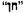
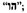

IN THIS LIST of changes made in the copy-text by the editors of the Northwestern-Newberry edition, the following abbreviations are used to designate the sources of readings:
|
A |
American Edition (1851) |
|
E |
English Edition (1851) |
|
H |
Harper’s New Monthly Magazine (October, 1851) |
|
NN |
Northwestern-Newberry Edition |
The wavy dash (~) stands for the word previously cited and signals that only a punctuation mark is emended. The caret (^) indicates the absence of a punctuation mark (but does not necessarily imply the presence of a space: see, for example, the entry for 85:29). Empty brackets ([ ]) indicate space where a letter or mark of punctuation failed to print. A slash (/) indicates a line-end break within a word in the copy-text.
CONTENTS: (vii:22) “Prairie” E for “Praire”.
ETYMOLOGY: (xxxvii:4) “[The” E for “^~” (xxxvii:8) “mortality.]” E for “~.^” (xxxvii:20)  NN for  (xxxvii:23) “WHÆL” NN for “WHŒL” (xxxvii:24) “HVAL” NN for “HVALT” (xxxviii:2) “HVALUR” NN for “WHALE”.
EXTRACTS: (xxxix:3) “[It” E for “^~” (xl:2) “glasses!]” E for “~!^” (xl:22) “Balænæ” NN for “Balæne” (xli:23) “Ibid.” E for “~^” (xli:27) “recure” NN for “secure” (xli:29) “lovely” NN for “lowly” (xli:31) “from” NN for “thro’” (xlii:5) “Hofmannus” NN for “Hosmannus” (xlii:8) “iron” NN for “modern” (xlii:18) “Holy War” E for “Pilgrim’s Progress” (xlii:24) “on” NN for “in” (xlii:27) “trunk” NN for “breath” (xliii:3) “foot” NN for “feet” (xliii:20) “Hitland” NN for “Shetland” (xliii:27) “foot” NN for “feet” (xliii:28) “beside” NN for “besides” (xliii:30) “Pitfirren” NN for “Pitferren” (xliii:34) “Stafford” NN for “Strafford” (xliv:5) “these” NN for “those” (xliv:15) “stiff” E for “stuffed” (xliv:30) “brimstone” NN for “lime-stone” (xlv:4) “1788” NN for “1778” (xlv:15) “coasts” NN for “coast” (xlv:21) “flew” NN for “blew” (xlv:22) “fires” NN for “fire” (xlv:23) “Amid” NN for “Around” (xlvi:14) “instinct” NN for “instincts” (xlvi:17) “jaw,” E for “~.” (xlvii:10) “Chase” NN for “Chace” (xlvii:14) “Ocean.” NN for “~.^” (xlvii:14) “Chase” NN for “Chace” (xlvii:16) “on” NN for “in” (xlvii:30) “jaw” NN for “jaws” (xlviii:12) “those” NN for “these” (xlviii:34) “Cruise” E for “Cruize” (xlix:3) “Mutiny,” NN for “~,^” (xlix:4) “Hussey,” E for “~^” (xlix:9) “Bennet” NN for “Bennett” (xlix:19) “as” NN for [not present]; (xlix:24) “the” E for “tke” (xlix:34) “mere” E for “near” (1:14) “Hobomock” NN for “Hobomack” (1:20) “Fishermen” NN for “Fisherman”.
CHAPTER 1: (3:22) “Battery” E for “battery” (5:15) “make him the” E for [not present]; (8:17) “midmost” E for “mid most”.
CHAPTER 2: (11:10) “out-hanging” E for [not present]; (12:9) “wrapper^” NN for “~-” (12:10) “afterwards)—” NN for “~)^”.
CHAPTER 3: (13:14) “came” NN for “come” (14:17) “handle,” NN for “~^” (16:28) “four” NN for “three” (18:11) “any” E for “my” (19:26) “an airley” E for “an early” (19:30) “bamboozling” NN for “bamboozingly” (21:10) “Sal” NN for “Sall” (22:1–2) “wardrobe^” NN for “~,” (22:2) “doubt,” NN for “~^” (22:11) “the same as” E for “as you see the same”.
CHAPTER 4: (30:25) “having” NN for “leaving” (31:4) “any” E for “auy”.
CHAPTER 6: (36:17) “Tongatabooans” E for “Tongatabooarrs”.
CHAPTER 9: (46:20) “left” E for “lift” (47:17) “‘And” E for “~” (47:18) “Jonah.’” E for “~.” ” (49:11) “‘Who’s” E for “^‘~” (49:27) “ “Now” E for “^~” (52:3) “become” E for “became” (52:12) “ “And” E for “^~” (54:37) “remained,” NN for “~^”.
CHAPTER 12: (62:10) “haply” E for “happily”.
CHAPTER 13: (65:3) “hands” NN for “hand” (65:14) “Kokovoko” E for “Rokovoko” (65:18) “Kokovoko” E for “Rokovoko” (66:24) “bows” E for “brows” (67:13) “bery” NN for “bevy”.
CHAPTER 14: (70:31) “rests” NN for “riots”.
CHAPTER 15: (74:6) “fishy” E for “fishing” (74:38) “only” E for “only” (75:3) “a-night” E for “at night”.
CHAPTER 16: (77:32) “Becket” E for “Beckett” (79:21) “Marchant” E for “Merchant” (82:24) “virgin,” E for “~^” (82:24) “voluntary,” E for “~^” (83:9) “Bildad” E for “Peleg” (85:29)” “‘Lay” NN for “ “^~” (85:30) “moth—’” NN for “~-^” ” (86:12) “ “‘for” NN for “ “^~” (86:13) “also.’” ” NN for “~.^” ” (87:17–18) “Thank ye” NN for “That’s he” (87:25) “he” E for “he” (88:25) “that,” E for “~^”.
CHAPTER 17: (92:5) “mustard-pot” NN for “vinegar-cruet” (92:29) “knob” E for “knot” (93:10) “I” E for “he”.
CHAPTER 18: (96:title) “18” E for “XVII” (96:17) “First” E for “first” (98:3) “to” NN for [not present]; (98:33) “Bel” E for “Bell”.
CHAPTER 19: (101:31) “prophecy?” E for “~.” (102:28) “you?” ” E for “~?^”.
CHAPTER 20: (105:10) “stowage” E for “storage” (105:37) “running” E for “hobbling”.
CHAPTER 21: (109:11) “him,” E for “~^” (109:11) “fashion^” E for “~,”.
CHAPTER 22: (111:4) “gifts” NN for “gift” (113:6) “ye—spring,” NN for “~-~!” (113:6) “Quohog” E for “Quohag”.
CHAPTER 24: (120:11) “Cooks” E for “Cookes” (120:14) “Cook” E for “Cooke” (120:17) “Cook” E for “Cooke”.
CHAPTER 26: (124:23) “words” NN for “sounds” (125:20) “Stubb” E for “Stbub” (126:5) “bravery,” NN for “~^” (126:5) “chiefly^” E for “~,”.
CHAPTER 27: (130:2) “to” E for “[ ]o” (130:3) “battering” E for “batter-/[ ]ng” (130:7) “presently” NN for “probably” (132:5) “did! Poor” E for “did—oh, no! he went before. Poor”.
CHAPTER 28: (133:21) “warranty” E for “warrantry” (134:36) “say.” E for “~,”.
CHAPTER 31: (143:1) “ ’Slid” NN for “^~” (143:15) “‘Halloa,’” E for “‘~,^” (143:37) “quick” E for [not present].
CHAPTER 32: (146:7) “Bonnaterre” NN for “Bonneterre” (146:9) “Olmsted” NN for “Olmstead” (146:9) “Henry” NN for [not present]; (147:28) “1766” NN for “1776” (148:bottom) “Lamantins” NN for “Lamatins” (149:12) “Pottfisch” NN for “Pottsfich” (150:11) “Baleine” E for “Baliene” (150:12) “Gronlands Walfisk” NN for “Growlands Walfish” (153:9) “Killer” NN for “Thrasher” (153:10) “Thrasher” NN for “Killer” (155:31) “(Duodecimo).” NN for “(~.)” (156:2) “i.e.” E for “i.e^”.
CHAPTER 33: (160:20) “direst” E for “direct”.
CHAPTER 34: (165:26) “whetstones” E for “whetstone”.
CHAPTER 35: (168:22) “even” E for “ever” (168:25) “however,” NN for “~^” (169:8) “pleasant—” E for “~^” (169:38) “coolish” E for “cold” (171:29) “Southern” E for “South” (173:6) “Wickliff’s” E for “Cranmer’s”.
CHAPTER 36: (176:1) “men,—a doubloon” E for “men” (177:13) “that” E for “tha[ ]” (180:12) “wert” E for “wer’t”.
CHAPTER 38: (184:21) “demogorgon” E for “demigorgon”.
CHAPTER 39: (186:20) “loves” NN for “love,”.
CHAPTER 40: (187:6) “commanded^—” E for “~.—” (189:6) “comes” NN for “come’s” (189:8) “AZORES” NN for “AZORE” (189:14) “AZORES” NN for “AZORE” (190:2) “one” E for “a” (190:2) “your” E for “you” (190:15) “waves’” NN for “~^” (190:15) “snow-caps’” NN for “snow’s caps” (190:27) “TAHITIAN” E for “TAHITAN” (190:30) “valed” E for “veiled”.
CHAPTER 41: (196:17) “fearfully” E for “fearfully” (196:34) “Povelsen” NN for “Povelson” (197:3) “terror” NN for “terrors” (197:8) “Povelsen” NN for “Povelson” (198:14) “Strella” NN for “Strello”.
CHAPTER 42: (204:22) “Cæsarian^” E for “~,” (206:4) “albatross:” E for “~,” (208:2) “kin?” NN for “~!” (208:20) “much” E for “much like” (209:37) “seas;” E for “~:”.
CHAPTER 44: (216:bottom) “on” NN for “in” (217:7) “in crossing” E for “incrossing” (217:31) “and” E for “or” (217:33) “probability” NN for “possibility” (218:17) “covertly” E for “correctly” (218:33) “No” NN for “Yes”.
CHAPTER 45: (223:4) “Jack” NN for “Tom” (223:7) “Tom” NN for “Jack” (223:21) “Church” NN for “Butler” (224:12) “others,” NN for “~^” (225:6) “Chase” NN for “Chace” (225:bottom) “Chase’s” NN for “Chace’s” (226:23) “Ochotsk” NN for “Ochotsh” (227:29) “over” NN for “on”.
CHAPTER 47: (234:10) “modified” E for “directed” (235:1) “steward!” NN for “~!^”.
CHAPTER 48: (237:18) “back!—Never” E for “~!”[¶]“~” (237:19) “sir,” ” E for “~,’” (238:33) “boys!)” NN for “~!”)” (240:9) “oar” E for “oars” (241:18) “Though,” E for “~^” (241:18) “truly,” E for “~^” (242:9) “fair” NN for “far” (242:14) “eyes,” NN for “~^”.
CHAPTER 50: (251:10) “Archy’s” NN for “Cabaco’s”.
CHAPTER 51: (255:27) “Tormentoso” NN for “Tormentoto”.
CHAPTER 54: (266:17) “westward” NN for “eastward” (267:4) “Nantucketer” NN for “Vineyarder” (267:34) “birch” NN for “beech” (270:5) “sailor’s” NN for “sailors’” (272:20) “^Canallers” H for “‘~” (272:24) “ “^Aye” H for “~?” ‘~” (273:6) “plaza” H for “plazza” (276:31) “now!” E for “~?” (277:35) “three” H for “these” (280:6) “beneath” NN for “between” (281:3) “rolls!^” H, E for “~!’” (281:3) “whale!’” H, E for “~!^” (281:13) “up” H, E for “up up” (281:14) “Now,” H, E for “~.” (284:30) “honor,” H, E for “~^”.
CHAPTER 57: (296:10) “else—” E for “~^” (296:11) “hills—” E for “hills, that” (296:12) “Solomon” NN for “Soloma” (296:13) “Figueroa” NN for “Figuera”.
CHAPTER 59: (302:15) “Pontoppidan” NN for “Pontoppodan”.
CHAPTER 60: (303:25) “twelve” NN for “twenty” (305:28) “contortions” E for “contortion”.
CHAPTER 61: (310:33) “bowsman;” E for “~’. ” (312:1) “Tashtego” NN for “Daggoo”.
CHAPTER 64: (321:19) “Dough” E for “Do” (321:31) “yourselbs” E for “yoursebls” (321:33) “good” NN for “dood”.
CHAPTER 65: (325:21) “fastidious” E for “fastidions” (327:21) “formerly” NN for “formally”.
CHAPTER 66: (328:9) “two,” E for “~^” (328:10) “hour^” E for “~,”.
CHAPTER 69: (336:21) “vulturism” E for “vultureism”.
CHAPTER 70: (340:19) “lives in” E for “lives on”.
CHAPTER 71: (341:4) “stranger’s” E for “strangers’”.
CHAPTER 72: (348:21) “skirt” NN for “shirt” (351:31) “bellows” E for “bitters” (351:31) “breath” E for “life”.
CHAPTER 73: (357:4) “lets” E for “let’s”.
CHAPTER 76: (370:16) “Sais” NN for “Lais”.
CHAPTER 77: (372:34) “fatal” E for “fata[]”.
CHAPTER 79: (378:title) “Prairie” E for “PRAIRE”.
CHAPTER 80: (382:1) “brow” NN for “bow”.
CHAPTER 81: (387:25) “Fiercely^” NN for “~,” (387:25) “evenly,” NN for “~^” (388:3) “diagonally” E for “diagonically” (388:27) “and,” NN for “~^”.
CHAPTER 85: (405:9) “1850” E for “1851” (406:23) “fishermen” E for “fishermen” (407:3) “necessities,” NN for “~^”.
CHAPTER 86: (411:15) “Eckermann” NN for “Eckerman”.
CHAPTER 87: (420:1) “gallied.*” E for “gallied.^” (420:bottom) “* To…World.” E [except that Act iii. sc. II. is restyled by NN to Act III. SC. ii. in 384.33] for [not present]; (423:21) “still,” NN for “~^” (424:21) “vicissitudes” E for “vicisitudes”.
CHAPTER 89: (433:24) “seas,” E for “seas; and when indeed” (433:25) “but” E for “they were” (433:26) “were” E for [not present]; (434:24) “defendants” E for “plaintiffs”.
CHAPTER 90: (438:18) “Plowden” NN for “Plowdon” (438:18) “Plowden” NN for “Plowdon” (438:25) “Ye” E for “Ye” (438:26) “ye” E for “ye” (438:26) “that ye” E for “that ye” (438:26) “wardrobe” E for “warbrobe” (438:26–27) “with ye” E for “with ye”.
CHAPTER 91: (440:2) “that” E for “not” (444:1) “augured” NN for “argued” (446:12) “without” E for “withont”.
CHAPTER 93: (451:17) “effulgenees” E for “effulgenees” (452:29) “loves” NN for “loved” (453:19) “considerateness” E for “considerations”.
CHAPTER 94: (456:4) “petulance” E for “petulence” (458:13) “assistant’s” NN for “assistants’”.
CHAPTER 99: (470:24) “flow” E for “flows” (472:9) “old” E for “ol[ ]” (472:37) “almanack;” E for “~[ ]” (473:5) “Bull;—” E for “~^^” (473:5) “Jimini” E for “Jimimi” (473:33) “and,” NN for “~^” (473:33) “up,” NN for “~^” (475:8) “Hark!” ” NN “~!^”.
CHAPTER 101: (483:18) “1788” NN for “1778” (484:8) “testing” NN for “tasting”.
CHAPTER 103: (494:11) “embryo” E for [not present].
CHAPTER 104: (497:23) “antechronical” E for “antichronical” (497:36) “Dauphine” NN for “Dauphiné” (498:21–22) “antechronical” E for “antichronical” (498:32) “Pharaohs’” E for “Pharaoh’s” (499:17) “by” NN for [not present].
CHAPTER 105: (501:3) “Cook’s” E for “Cooke’s” (501:4) “Swedish” NN for “Danish” (501:5) “reydar-fiskur” NN for “reydan-siskur” (503:18) “Horto” NN for “Harto”.
CHAPTER 107: (509:11) “longs” NN for “longed” (509:12) “oar:” NN for “~;”.
CHAPTER 108: (514:9) “as a” E for “as”.
CHAPTER 112: (527:15) “petulance” E for “petulence”.
CHAPTER 114: (535:8) “ “Oh” NN for “^~” (535:26) “it.” ” NN for “~.^”.
CHAPTER 115: (536:11) “up” NN for “down”.
CHAPTER 116: (540:14) “power!” NN for “~?” (540:15) “striveth” NN for “strivest” (540:15) “jetteth” NN for “jettest”.
CHAPTER 118: (543:11) “sometimes,” E for [not present]; (545:18–19) “die in” NN for “die”.
CHAPTER 119: (548:9) “Yes” E for “^~” (549:15) “sailors,” E for “sailors’” (549:20) “Tekel,” E for “~^” (550:2) “to” E for “too”.
CHAPTER 121: (554:24) “the holder” E for “theh older”.
CHAPTER 124: (562:33) “braced” E for [not present].
CHAPTER 125: (567:20–21) “Reward for Pip! One hundred pounds of clay—” NN for “One hundred pounds of clay reward for Pip;” (567:30) “intently” E for “intenting”.
CHAPTER 126: (571:32) “it’s undignified” NN for “its undignified”.
CHAPTER 127: (573:4) “and” E for “aud” (574:31) “deaf” NN for “dumb”.
CHAPTER 128: (578:13) “boats’” NN for “boat’s”.
CHAPTER 131: (587:4) “upon” E for “upom”.
CHAPTER 132: (591:4) “bread,” NN for “~^” (592:18) “cozening” E for “cozzening” (592:34) “air” E for “airs”.
CHAPTER 133: (596:22) “fowls” E for “fowels” (596:34) “laving” E for “leaving” (600:14) “prow was” E for “prows were” (601:22–23) “Moby^Dick” E for “~-~”.
CHAPTER 134: (606:17) “guiltlessness” NN for “guiltiness” (610:9) “being.” E for “~^” (610:15) “boats’” E for “boat’s” (611:36) “brave,” E for “~^” (612:18) “set” E for “sat”.
CHAPTER 135: (613:17) “turn” E for “turned” (618:20) “While” E for “While” (618:20) “Tashtego” NN for “Queequeg” (621:29) “fit.” E for “~^” (624:1) “death-grasp” E for “death-gasp”.